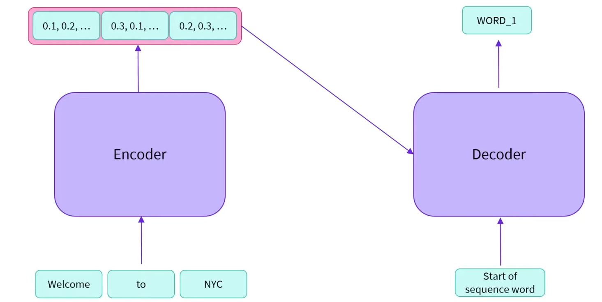
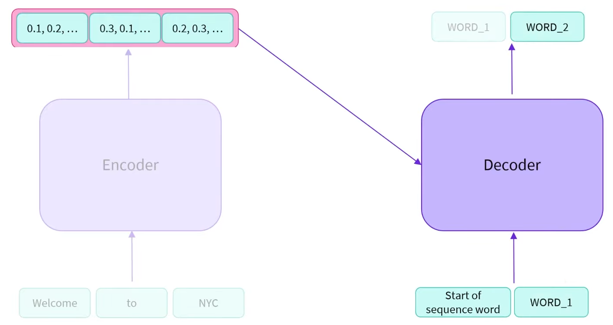
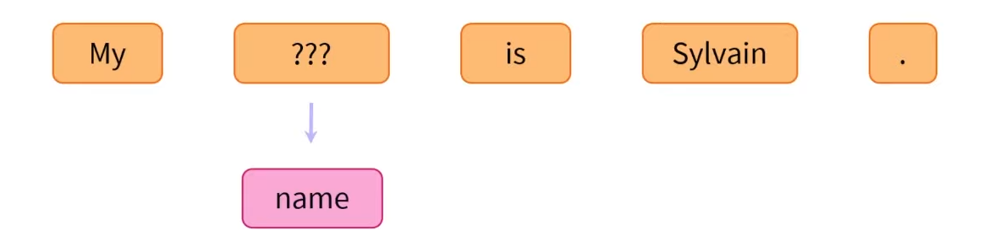
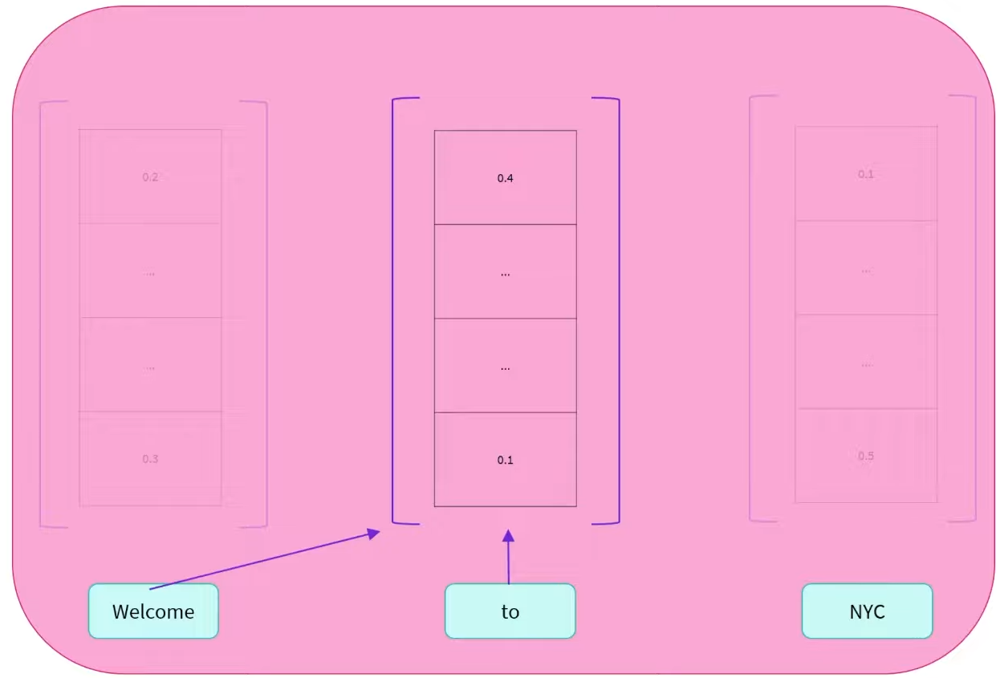
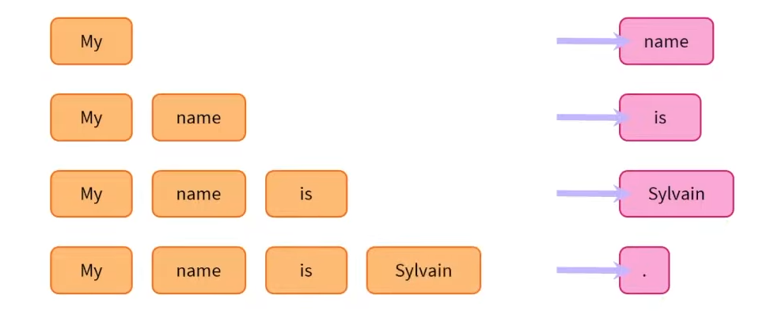
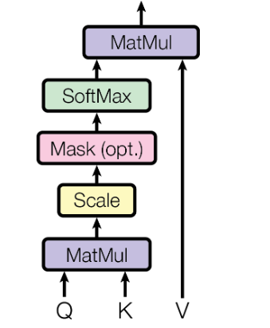
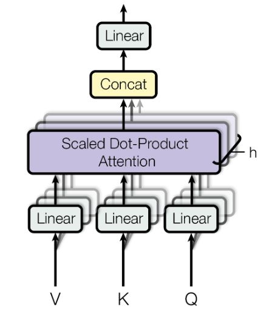
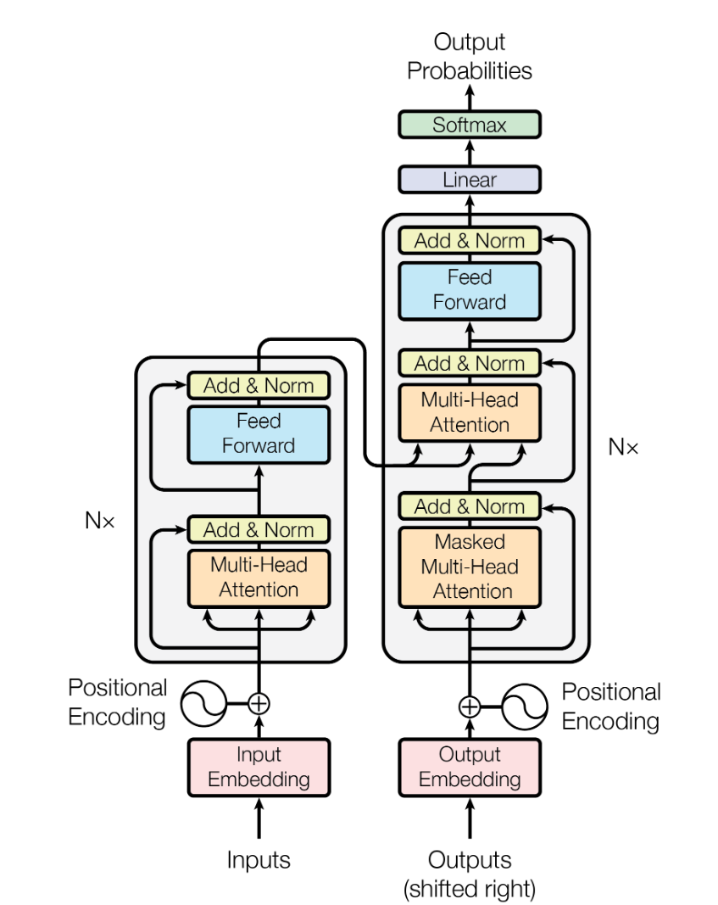

1 相关内容
Attention Is All You Need
The code we used to train and evaluate our models is available at https://github.com/tensorflow/tensor2tensor.
博客中用于解释结构的代码，来自于annotated-transformer
部分讲解来自https://youtu.be/H39Z_720T5s?si=0HuRP3OUtu6FEZAN
Encoder and Decoder
-
Encoder and Decoder can be used together, but they can also be used independently.
-
How to work
-
The encoder accepts inputs that represent text. It converts this text, these words, into numerical representations. These numerical representations can also be called embeddings, or features.
The encoder accepts inputs and computes a high-level representation of those inputs. These output are then passed to the decoder.
- Self-attention mechanisam
- Bi-directional property
-
The decoder is similar to the encoder. It can also accept the same inputs (text representations) as the encoder.
- Masked self-attention mechanism
- Uni-directional property
- Auto-regressive manner
The decoder uses the encoder’s output alongside other inputs, in order to generate a prediction. It then predicts an output, which it will re-use in future iterations, hence the term “auto-regressive” (然后，它预测一个输出，并将在未来的迭代中重复使用该输出，因此称为“自回归”).
Additionally to the encoder outputs, we also give the decoder a sequence. When prompting the decoder for an output with no initial sequence, we can give it the value that indicates the start of a sequence. 当提示解码器输出没有初始序列的输出时，我们可以给它一个指示序列开始的值。
-
Combining the two parts results in what is known as an encoder-decoder, or a seq2seq transformer
-
-
the encoder-decoders as a whole
The encoder has, in a sense, encoded the sequence. And the decoder, in turn, using this input alongside its usual sequence input, will take a stab at decoding the sequence. 从某种意义上说，编码器对序列进行了编码。 反过来，解码器将使用此输入及其通常的序列输入来尝试解码序列。
Now that we have both the feature vector and an initial generated word, we don’t need the encoder anymore. As we have seen before with the decoder, it can act in an auto-regressive manner. The word it has just output can now be used as an input.
It then uses a combination of the representation and the word it just generated to generate a second word.
 -
When should one use a seq2seq model?
- seq2seq tasks; many-to-many: translation, summarization
- Weights are not necessarily shared across the encoder and decoder
- Input distribution different from output distribution
Encoder
BERT is a popular encoder-only architecture, which is the most popular model of its kind.
- The encoder outputs exactly on sequence of numbers per input word. (This numerical representation can also be called a “Feature vector”, or “Feature tensor”)
- The dimension of that vector is defined by the architecture of the model, for the base BERT model, it is 768.
- These representations contain the value of a word, but contextualized. 这些表示包含单词的值，但是是上下文化的。One could say that the vector of 768 values holds the “meaning” of that word in the text. The self-attention mechanism is used to do this.
- The self-attention mechanism relates to different positions (or different words) in a single sequence, in order to compute a representation of that sequence. 自注意力机制涉及单个序列中的不同位置（或不同单词），以便计算该序列的表示。This means that the resulting representation of a word has been affected by other words in the sequence.
-
Why would one use an encoder?
- Bi-directional: context from the left, and the right
- Good at extracting vectors that carry meaningful information about a sequence.
- Sequence classification, question answering, masked language modeling
- NLU: Natural Language Understanding
- Encoders can be used as standalone models in wide variety of tasks. 编码器可以在各种任务中用作独立模型。Example of encoders: BERT, RoBERTa, ALBERT
-
Masked Language Modeling (MLM)
-
It’s the task of predicting a hidden word in a sequence of words.
 -
This requires a semantic understanding as well as a syntactic understanding.
Encoders shine in this scenario in particular, as bidirectional information is crucial here. The encoder needs to have a good understanding of the sequence in order to predict to a masked word, as even if the text is grammatically correct, It does not necessarily make sense in the context of the sequence. 编码器在这种情况下尤其出色，因为双向信息在这里至关重要。编码器需要对序列有很好的理解，以便预测屏蔽词，因为即使文本在语法上是正确的，它在序列的上下文中也不一定有意义。
-
-
Sentiment analysis (Analyze the sentiment of a sequence.)
- Encoders are good at obtaining an understanding of sequences; and the relationship/interdependence between words.
Decoder
-
One can use a decoder for most of the same tasks as an encoder, albeit with, generally, a little loss of performance.
-
the input and output is similar to the encoder.
-
Where the decoder differs from the encoder is principally with its self-attention mechanism.
-
masked self-attention
all the words on the right (also known as the right context) of the word is masked.
the decoders only have access to the words on their left.
the masked self-attention mechanism differs from the self-attention mechanism by using an additional mask to hide the context on either side of the word: the word’s numerical representation will not be affected by the words in the hidden context.
-
-
When should one use a decoder?
-
Unidirectional: access to their left (or right) context
-
Great at causal tasks; generating sequences
-
NLG: Natural Language generation
 -
Example of decoders: GPT-2, GPT Neo
-
2 Attention
2.1 Scaled Dot-Product Attention
An attention function can be described as mapping a query and a set of key-value pairs to an output, where the query, keys, values, and output are all vector. The output is computed as a weighted sum of the values, where the weight assigned to each value is computed by a compatibility function of the query with the corresponding key.
 $$ Attention(Q, K, V) j= softmax(\frac{QK^T}{\sqrt{d_k}})V $$: a set of queries
: keys of dimension
: values of dimension
1 | def attention(query, key, value, mask=None, dropout=None): |
Dot-product attention is much faster and more space-efficient than additive attention in practice, since it can be implemented used highly optimized matrix multiplication code.
For large values of , the dot products grow large in magnitude, pushing the softmax function into regions where the has extremely small gradients. To counteract this effect, we scale the dot products by .
2.2 Multi-Head Attention
Multi-head attention allows the model to jointly attend to information from different representation subspaces at different positions. With a single attention head, averaging inhibits this.
 $$ MultiHead(Q, K, V) = Concat(head_1\;,...,\;head_h)W^O where\;head_i\\ = Attention(QW_i^Q, KW_i^K, VW_i^V) $$ Where the projections are parameter matrices $W_i^Q \in \mathbb{R}^{model \times d_k},\;W_i^K \in \mathbb{R}^{model \times d_k},\;W_i^V \in \mathbb{R}^{model \times d_v}$ and $W^O \in \mathbb{R}^{hd_v \times d_model}$.In this work we are employ parallel attention layers, or heads. For each of these we use . Due to the reduced dimension of each head, the total computational cost is similar to that of single-head attention with full dimensionality.
1 | class MultiHeadedAttention(nn.Module): |
2.3 Applications of Attention in our Model
-
In “encoder-decoder attention” layers.
- The queries come from the previous decoder layer
- The memory keys and values come from the output of the encoder.
- This allow every position in the decoder to attend over all positions in the input sequence. 这使得decoder中的每个位置都能关注输入序列中的所有位置。
-
Self-attention layers in encoder
- All of the keys, values and queries come from the same place, in this case, the output of the previous layer in the encoder.
- Each position in the encoder can attend to all positions in the previous layer of the encoder. encoder中的所有位置都可以关注encoder上一层的所有位置。
-
Self-attention in decoder
- Each position in the decoder to attend to all positions in the decoder up to and including that position.
- We need to prevent leftward information flow in the decoder to preserve the auto-regressive property. 我们需要在decoder中防止信息向左流动，以保持自回归性。
- We implement this inside of scaled dot-product attention by masking out (setting to ) all values in the input of the softmax which correspond to illegal connections.
3 其他组件
3.1 Position-wise Feed-Forward Networks
Each of the layers in our encoder and decoder contains a fully connected feed-forward network, which is applied to each position separately and identically. The consists of two linear transformations with a ReLU[1] activation in between.
While the linear transformations are the same across different positions, they use different parameters from layer to layer. The dimensionality of input and output is , and the inner-layer has dimensionality .
1 | class PositionwiseFeedForward(nn.Module): |
3.2 Embeddings and Softmax
We used learned embeddings to convert the input tokens and output tokens to vectors of dimension . We also use the usual learned linear transformation and softmax function to convert the decoder output to predicted next-token probabilities. In our model, we share the same weight maxtrix between the two embedding layers and the pro-softmax linear transformation. In the embedding layers, we multiply those weights by .
3.3 Positional Encoding
In order for the model to make use of the order of the sequence, we must inject some information about the relative or absolute position of the tokens in the sequence. To this end, we add “positional encodings” to the input embeddings, so that the two can be summed. There are many choices of positional encodings, learned and fixed.
In this work, we use sine and cosine functions of different frequencies:
where pos is the position and i is the dimension. That is, each dimension of the positional encoding corresponds to a sinusoid. The wavelengths from a geometric progression from to . We chose this function because we hypothesized it would allow the model to easily learn to attend by relative positions, since for any fixed offset , can be represented as a linear function of .
Sinusoidal version may allow the model to extrapolate to sequence lengths longer than the ones encountered during training.
In addition, we apply dropout to the sums of the embeddings and the positional encoding in both the encoder and decoder stacks. For the base model, we use a rate of .
1 | class PositionalEncoding(nn.Module): |
4 Encoder and Decoder
The encoder maps an input sequence of symbol representations to a sequence of continuous representations . Given , the decoder then generates an output sequence of symbols one element at a time. At each step the model is auto-regressive, consuming the previously generated symbol as additional input when generating the next.
1 | class EncoderDecoder(nn.Module): |
1 | class Generator(nn.Module): |
4.1 Encoder
The encoder is composed of a stack of identical layers.
1 | class Encoder(nn.Module): |
We employ a residual connection around each of the two sub-layers, followed by layer normalization. That is, the output of each sub-layer is , where is the function implemented by sub_layer itself. We apply dropout to the each sub-layer, before it is added to the sub-layer input and normalized.
To facilitate these residual connections, all sub-layers in the model, as well as the embedding layers, produce outputs of dimension .
1 | class SublayerConnection(nn.Module): |
Each layer has two sub-layers. The first is a multi-head self-attention mechanism, and the second is a simple, position-wise fully connected feed-forward network.
1 | class EncoderLayer(nn.Module): |
4.2 Decoder
The decoder is also composed of a stack of identical layers.
1 | class Decoder(nn.Module): |
In addition to the two sub-layers in each layer, the decoder inserts a third sub-layer, which performs multi-head attention over the output of the encoder stack. Similar to the encoder, we employ residual connections around each of the sub-layers, followed by layer normalization.
1 | class DecoderLayer(nn.Module): |
We also modify the self-attention sub-layer in the decoder stack to prevent positions from attending to subsequent positions. The masking, combined with fact that the output embeddings are offset by one position, ensures that the predictions for position can depend only on the known outputs at positions less than .
1 | def subsequent_mask(size): |